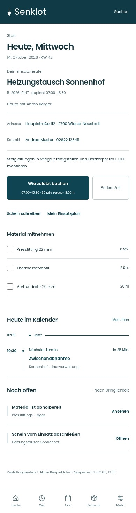
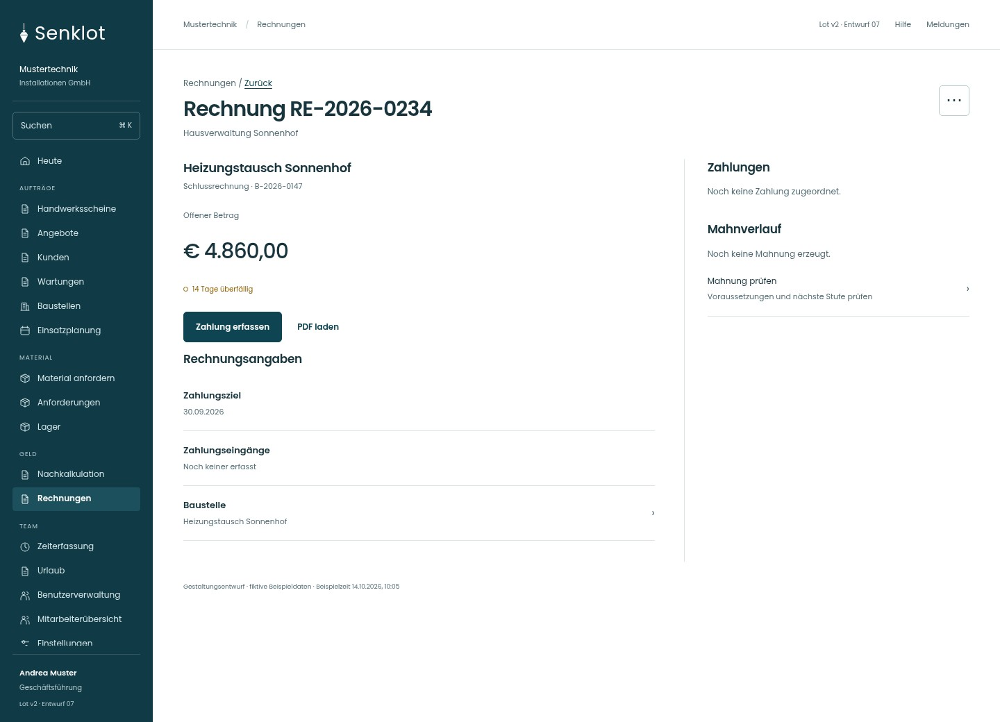

SENKLOT · LOT V2 · ENTWURF 07
Die Monteuransicht behält Einsatzkontakt und Zeitvorlage. Bei Rechnungen sind Zahlung und PDF direkt erreichbar.


„Wie zuletzt buchen“ öffnet das vorausgefüllte Formular. Die Buchung wird erst dort bestätigt.
Anmeldekennungen bleiben getrennt von den frei bearbeitbaren Stammdaten. Seltene Aktionen folgen den bestehenden Berechtigungen und Belegzuständen.